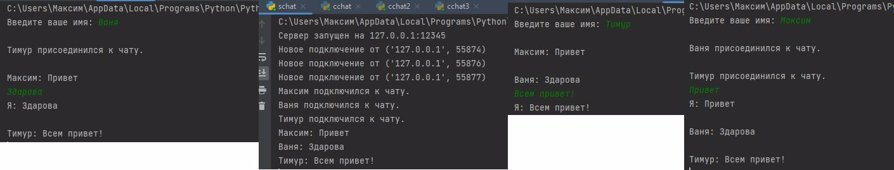

Задача 4: Многопользовательская Чат-Система
Скриншот казни:

Описание
Эта задача реализует многопользовательскую чат-систему: - Сервер управляет несколькими клиентами, транслирует сообщения и поддерживает список подключенных пользователей. - Клиенты подключаются к серверу, отправляют сообщения и получают сообщения от других участников.
Возможности
- Сервер:
- Обрабатывает подключение нескольких клиентов одновременно с использованием потоков.
- Хранит список подключенных клиентов и их имена.
-
Транслирует сообщения всем клиентам, кроме отправителя.
-
Клиент:
- Отправляет сообщения серверу.
- Получает и отображает сообщения от других участников в режиме реального времени.
- Позволяет пользователю ввести имя при подключении.
Код на серверной стороне
Основной функционал:
- Принимает подключения клиентов и назначает им имена.
- Транслирует сообщения всем клиентам, кроме отправителя.
- Удаляет клиентов, которые отключились.
import socket
import threading
clients = {}
def broadcast(message, sender_socket):
for client_socket, client_name in clients.items():
if client_socket != sender_socket:
try:
client_socket.send(message.encode())
except:
client_socket.close()
del clients[client_socket]
def handle_client(client_socket):
try:
client_name = client_socket.recv(1024).decode()
clients[client_socket] = client_name
print(f"{client_name} подключился к чату.")
broadcast(f"{client_name} присоединился к чату.", client_socket)
while True:
message = client_socket.recv(1024).decode()
if message:
print(f"{client_name}: {message}")
broadcast(f"{client_name}: {message}", client_socket)
else:
break
except:
pass
finally:
print(f"{clients[client_socket]} отключился.")
broadcast(f"{clients[client_socket]} покинул чат.", client_socket)
client_socket.close()
del clients[client_socket]
def start_server(host='127.0.0.1', port=12345):
server_socket = socket.socket(socket.AF_INET, socket.SOCK_STREAM)
server_socket.bind((host, port))
server_socket.listen(5)
print(f"Сервер запущен на {host}:{port}")
while True:
client_socket, client_address = server_socket.accept()
print(f"Новое подключение от {client_address}")
client_thread = threading.Thread(target=handle_client, args=(client_socket,))
client_thread.start()
if __name__ == "__main__":
start_server()